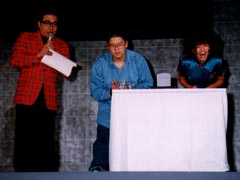
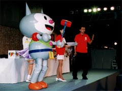
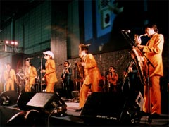
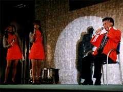

一般公開日のイベントステージでは、各出展者主催によるイベントも多数開催されました。製品の紹介にあわせて、声優やタレントのトーク、ラジオ番組の公開録音、ゲーム音楽のライブ演奏など、華やかな催しの連続で大の賑わい。
そしてこのステージの締めくくり・一般公開日の夕刻には、CESA主催のチャリティオークション＆大抽選会が開催され、各出展者提供のプレミアムグッズがお目当てのファンで、連日の大盛況でした。

ステージ上で憧れのタレントと対戦、勝たねば！
|
|

チャリティオークション。どんなお宝が出てきますか!?
|

熱気！ 東京スカパラダイスオーケストラのナマ演奏
|
|

CMで大人気、セガ「湯川専務」も登場
|
こうして3日間の会期が過ぎ、大成功のうちに「東京ゲームショウ '98秋」は閉幕。来場者の合計は、15万6455人。4回連続の、動員記録更新を果たすことができました。
東京ゲームショウには、今回も多くの新しい試みがありました。CESA上月会長の開会の挨拶にありました「新しさの追求」こそが、ゲーム界発展のエネルギー。明日は、もっと楽しく、面白く。ゲームという夢を、ずっと一緒に見続けようではありませんか。
そしてまた皆さんと、次回の東京ゲームショウでお目にかかることを、心から楽しみにしております。
|